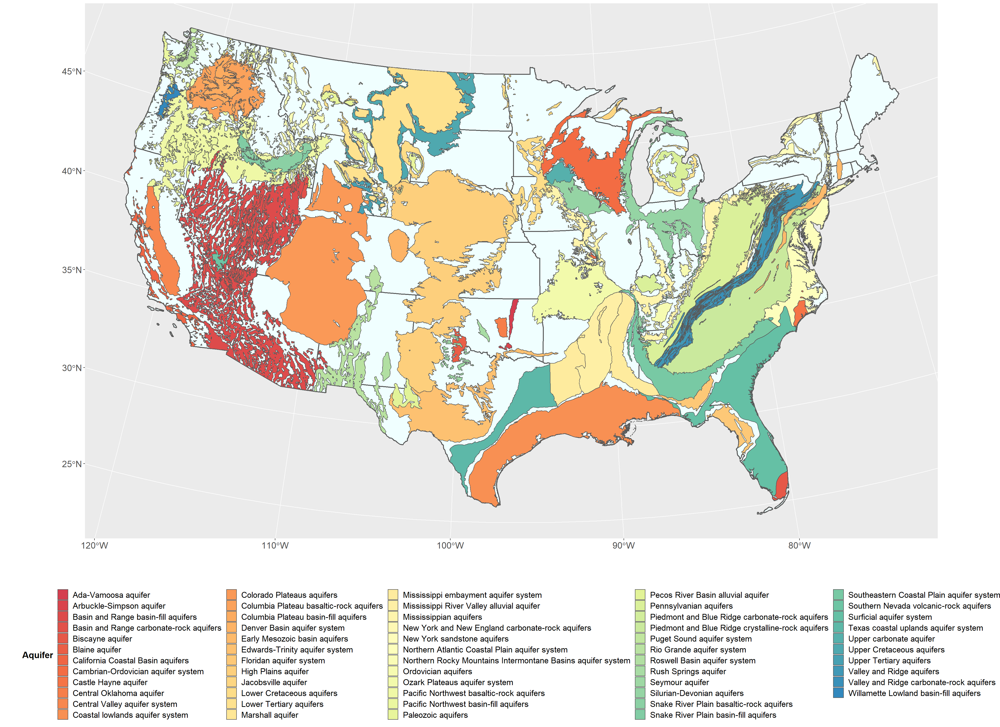

Background
The USGS National Water Information System (NWIS) provides public access to USGS Water Data. NWIS provides data from over 900,000 groundwater wells throughout the United States dating back to 1899. The goal of this research is to investigate depth to water fluctuations, analyze geospatial patterns and trends in well depth, and to relate this information to various sustainable groundwater management approaches implemented by state governments.
There are 62 principal aquifers in the United States.
